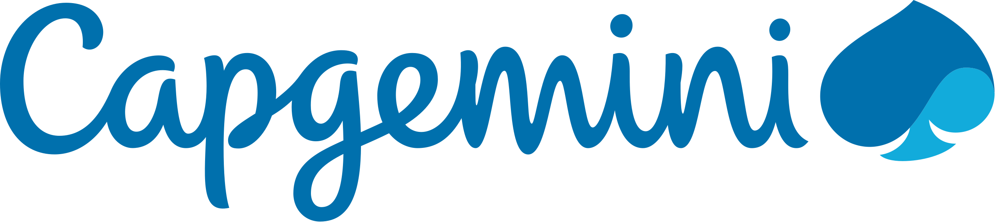

Passionate about AI and its applications, I help researchers in implementing AI solutions using supercomputers and I enjoy sharing my knowledge by organizing training courses.
Experience

AI Research Engineer
CNRS
October 2022 - Ongoing
I support AI research projects as part of the National AI Research Program (PNRIA) using the Jean Zay supercomputer, and I give AI-related training courses.
Some projects
- AutoSynth (LaBRI): code generation with LLMs in Reverse Polish Notation. Keywords: LLM, StarCoder2, multi-gpu, multi-node, finetuning, evaluation
- ARAI (LISN): image/video generation model inference acceleration to introduce subtle visual modifications in real time in augmented reality and LTX-Video model finetuning.
Demo + Keynote - Lynx-ID (CEFE): individual lynx identification from images and unique lynx coat patterns to estimate population size.
- scikit-mine (IRISA): development of a Python library of data mining algorithms compatible with scikit-learn. Algorithm implementation, optimization and tutorial production.
Github + Poster SMiLe (Spring workshop on Mining and Learning) - CLUSTER (LPC2E): use of space data collected on board of 4 ESA satellites over the last 20 years to predict the electromagnetic frequency of plasma in the magnetosphere
Teachings
During my time at CNRS, one of my activities is to give AI courses to academic, public and even private companies. Here are the main courses I've given:
-
Specialization of Large Language Models: Prompt Engineering & Fine-tuning
This advanced course focuses on strategies to adapt language models to specific datasets or use-cases. I designed part of the course and organize it regularly with engineers from IDRIS (CNRS, Paris-Saclay).Key concepts:They trusted us: academics, RTE, Thales, France Travail, EDF, Meteo France, French ministries, AMIAD, CEA and many more...- Transformer theory and finetuning of different architectures (decoder, encoder, encoder-decoder)
- Evaluation & metrics
- Data cleaning
- Prompt engineering
- RAG
- Inference optimization
- Preference alignment
- PEFT (Parameter Efficient Finetuning)
- Internal training: state of the art, technology watch, scientific conference feedback...

Data Intern
Capgemini
June 2021 - August 2022
Internship from June 2021 to August 2021, then professional training contract from September 2021 to August 2022.
Integrated into a project to create a platform for validating driver assistance systems in a cloud environment (Azure) for several car manufacturers.
Integrated into a project to create a platform for validating driver assistance systems in a cloud environment (Azure) for several car manufacturers.
Main activities:
- Traceability of data and actions via creation of a Python API (Flask, FastAPI) and creation of monitoring dashboards with Power BI
- Redesign of data model: graph-oriented NoSQL (ArangoDB) to SQL model (SQL Server)
- Deployments on Azure (Function App, App Service, Azure API Management) and automation via CI/CD
- Use of Big Data tools (Scala, Spark, Hadoop...)
Skills
Languages
French
Native
English
Professional (TOEIC: 935/990)
Core AI & ML
Machine/Deep Learning
NLP & LLM
Computer Vision
Diffusion Models
Distributed Learning
Evaluation
Technology stack
PyTorch
Transformers
LangChain
vLLM
Python
Tools
Git
Docker
Slurm
Markdown
CI/CD
Bash
Education
Master of Science in Computer Science with specialization in Data Science
INSA Rennes
2017 - 2022
High School Diploma in Science with Highest Honours
Lavoisier High School, Mayenne
2014 - 2017